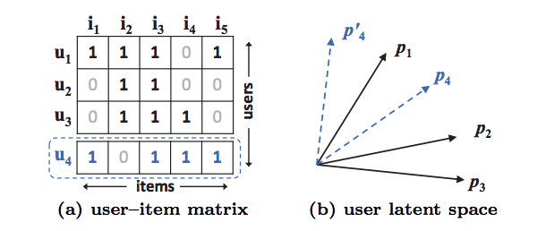

Show code
from IPython.display import Image
Image(filename="/notebooks/my_icons/NCF/MF_Limitation.png")
April 15, 2021
In recommendation systems, mainly in ecommerce websites, we see recommendations when we search for a product. The algorithm for recommending items for a customer is chaning/improving based on customer choices, personalized recommendation etc from time to time. So to serve customers more accurately by predicting best choices of items based on customers likes, personalized views, tastes, geographical likes etc we are using Neural Collaborative Filtering
Before going throught the NCF, lets discuss the most successfull algorithm Matrix Factorization, its usecases and drawbacks. Why NCF is better at recommedning the items based on other user likes, location etc.
Matrix factorization represents user/item as a vector of latent features which are projected into a shared feature space. In this feature space, the user-item interactions could be modeled using the inner product of user-item latent vectors. This vanilla implementation of Matrix factorization can be enhanced by integrating it with neighbor-based models, combining it with topic models of item content and extending it to factorization machines for general modeling of feature.
Equation 1 :- \[ \hat{Y}_{u,i} = f(u,i|{\theta}) \]
$y_{u,i}$: predicted score for interaction between user u and item i <br>
${\theta}$: model parameters <br>
$f(Interaction Function)$: maps model parameters to the predicted scoreIn order to calculate theta, an objective function needs to be optimized. The 2 most popular loss functions for the recommendation system are a pointwise and pairwise loss.
Matrix factorization models the user-item interactions through a scalar product of user-item latent vectors. In mathematical terms, it is represented as follows
Equation 2 :- \[ \hat{Y}_{u,i} = f(u,i|P_{u},q_{i}) = p^{T}_{u}q_{i} $ = $\sum_{k=1}^{K}p_{uk} q_{ik}\]
\(y_{u,i}\): predicted score for interaction between user u and item i
$p_{u} \(: latent vector for user u <br>\)q_{i}$: latent vector for item
K: the dimension of latent space
Despite the effectiveness of matrix factorization for collaborative filtering, it’s performance is hindered by the simple choice of interaction function - inner product. Its performance can be improved by incorporating user-item bias terms into the interactiion function. This proves that the simple multiplication of latent features (inner product), may not be sufficient to capture the complex structure of user interaction data.
As we can see, MF models the two-way interaction of user and item latent factors, assuming each dimension of the latent space is independent of each other and linearly combining them with the same weight. As such, MF can be deemed as a linear model of latent factors

Figure 1: An example illustrates MF’s limitation. From data matrix (a), u4 is most similar to u1, followed by u3, and lastly u2. However in the latent space (b), placing p4 closest to p1 makes p4 closer to p2 than p3 , incurring a large ranking loss.
Figure 1 illustrates how the inner product function can limit the expressiveness of MF. There are two settings to be stated clearly beforehand to understand the example well. First, since MF maps users and items to the same latent space, the similarity between two users can also be measured with an inner product, or equivalently2 , the cosine of the angle between their latent vectors. Second, without loss of generality, we use the Jaccard coefficient3 as the ground truth similarity of two users that MF needs to recover. The above figure shows the possible limitation of MF caused by the use of a simple and fixed inner product to estimate complex user–item interactions in the low-dimensional latent space. We note that one way to resolve the issue is to use a large number of latent factors K. However, it may adversely hurt the generalization of the model (e.g., overfitting the data), especially in sparse settings [26]. In this work, we address the limitation by learning the interaction function using Deep Neural Networks from data
** Implicit Feedback
Indirectly reflects the user’s preference through watching videos, product purchases, and clicks. The advantage of using implicit feedback is that it is easier to collect and is in surplus. The disadvantage is that there no readily available negative feedback.
** Explicit Feedback
consists of ratings and reviews. It’s a direct feedback and the negative feedback or the likeliness of a product is readily available in terms of rating.
Collaborative filtering is a technique that can filter out items that a user might like on the basis of reactions by similar users. It works by searching a large group of people and finding a smaller set of users with tastes like a particular user. It looks at the items they like and combines them to create a ranked list of suggestions. Collaborative filtering helps in identifying features between user and item using matrix - factorization by applying inner product on the latent features of users and items.
Despite the effectiveness of matrix factorization for collaborative filtering, its performance is hindered by the simple choice of interaction function - inner product. Its performance can be improved by incorporating user-item bias terms into the interaction function. This proves that the simple multiplication of latent features (inner product), may not be sufficient to capture the complex structure of user interaction data. This calls for designing a better, dedicated interaction function for modeling the latent feature interaction between users and items. Neural Collaborative Filtering (NCF) aims to solve this by: -
Modeling user-item feature interaction through neural network architecture. It utilizes a Multi-Layer Perceptron (MLP) to learn user-item interactions. This is an upgrade over MF as MLP can (theoretically) learn any continuous function and has high level of nonlinearities (due to multiple layers) making it well-endowed to learn user-item interaction function.
Generalizing and expressing MF as a special case of NCF. As MF is highly successful in the recommendation domain, doing this will give more credence to NCF.
NCF modifies equation 1 in the following way:
where
P: Latent factor matrix for users (Size=M * K)
Q: Latent factor matrix for items (Size=N * K)
Theta(f): Model parameters
Since f is formulated as MLP it can be expanded a
Modeling user-item interaction
where
Psi (out): mapping function for the output layer
Psi (x): mapping function for the x-th neural collaborative filtering layer
Equation 4 acts as the scoring function for NCF.
Pointwise squared loss equation is represented as
loss function here
y: observed interaction in Y
y negative: all/sample of unobserved interactions
w(u,i): the weight of training instance (hyperparameter)
The squared loss can be explained if we assume that the observations are from a Gaussian distribution which in our case is not true. Plus the prediction score y_carat should return a score between [0,1] to represent the likelihood of the given user-item interaction. In short, we need a probabilistic approach for learning the pointwise NCF that pays special attention to the binary property of implicit data.
NCF uses a logistic /probit function at the output layer to solve for the above.With the above settings, the likelihood function is defined as :
negative log of the likelihood function
We now show how MF can be interpreted as a special case of our NCF framework. As MF is the most popular model for recommendation and has been investigated extensively in literature, being able to recover it allows NCF to mimic a large family of factorization models. Due to the one-hot encoding of user (item) ID of the input layer, the obtained embedding vector can be seen as the latent vector of user (item). Let the user latent vector pu be P T v U u and item latent vector qi be QT v I i . We define the mapping function of the first neural CF layer as,
here
a-out: activation function
h: edge weights of the output layer
We can play with a-out and h to create multiple variations of GMF.
As you can see from the above table that GMF with identity activation function and edge weights as 1 is indeed MF. The other 2 variations are expansions on the generic MF. The last variation of GMF with sigmoid as activation is used in NCF. NCF uses GMF with sigmoid as the activation function and learns h (the edge weights) from the data with log loss.
NCF is an example of multimodal deep learning as it contains data from 2 pathways namely user and item. The most intuitive way to combine them is by concatenation. But a simple vector concatenation does not account for user-item interactions and is insufficient to model the collaborative filtering effect. To address this NCF adds hidden layers on top of concatenated user-item vectors(MLP framework), to learn user-item interactions. This endows the model with a lot of flexibility and non-linearity to learn the user-item interactions. This is an upgrade over MF that uses a fixed element-wise product on them. More precisely, the MLP alter Equation 1 as follows
where:
W(x): Weight matrix
b(x): bias vector
a(x): activation function for the x-th layer’s perceptron
p: latent vector for the user
q: latent vector for an item
NCF uses ReLU as an activation function for its MLP part. Due to multiple hidden layers, the model has sufficient complexity to learn user-item interactions as compared to the fixed element-wise product of their latent vectors (MF way).
So far we have developed two instantiations of NCF — GMF that applies a linear kernel to model the latent feature interactions, and MLP that uses a non-linear kernel to learn the interaction function from data. The question then arises: how can we fuse GMF and MLP under the NCF framework.
NCF combines these models together to superimpose their desirable characteristics. NCF concatenates the output of GMF and MLP before feeding them into NeuMF layer.
Important points to notice
The score function of equation 1 is modeled as,
G: GMF
M: MLP
p: User embedding
q: Item embedding
We use ReLU as the activation function of MLP layers. This model combines the linearity of MF and non-linearity of DNNs for modelling user–item latent structures. We dub this model “NeuMF”, short for Neural Matrix Factorization.
Due to the non-convex objective function of NeuMF, gradient-based optimization methods can only find locally-optimal solutions. This could be solved by good weight initializations. To solve this NCF initializes GMF and MLP with pre-trained models. There are 2 ways to do this
Random Initialization
Train GMF+MLP with random initializations until convergence.
Use model parameters of 1 to initialize NCF.
The weights of the two models are concatenated for the output layer as
GMF + MLP from scratch
where
h(GMF): h vector of the pre-trained GMF
h(MLP): h vector of the pre-trained MLP
alpha: Hyper-parameter determining the trade-off between the 2 pre-trained models
GMF + MLP from scratch
Adaptive Moment Estimation (Adam) adapts the learning rate for each parameter by performing smaller updates for frequent and larger updates for infrequent parameters. The Adam method yields faster convergence for both models than the vanilla SGD and relieves the pain of tuning the learning rate.
After feeding pre-trained parameters into NeuMF, we optimize it with the vanilla SGD, rather than Adam. Adam needs to save momentum information for updating parameters. As the initialization with pre-trained networks does not store momentum information